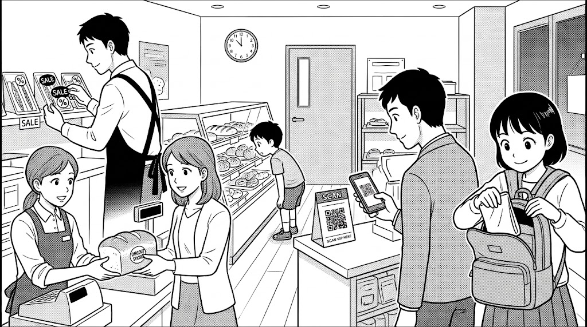
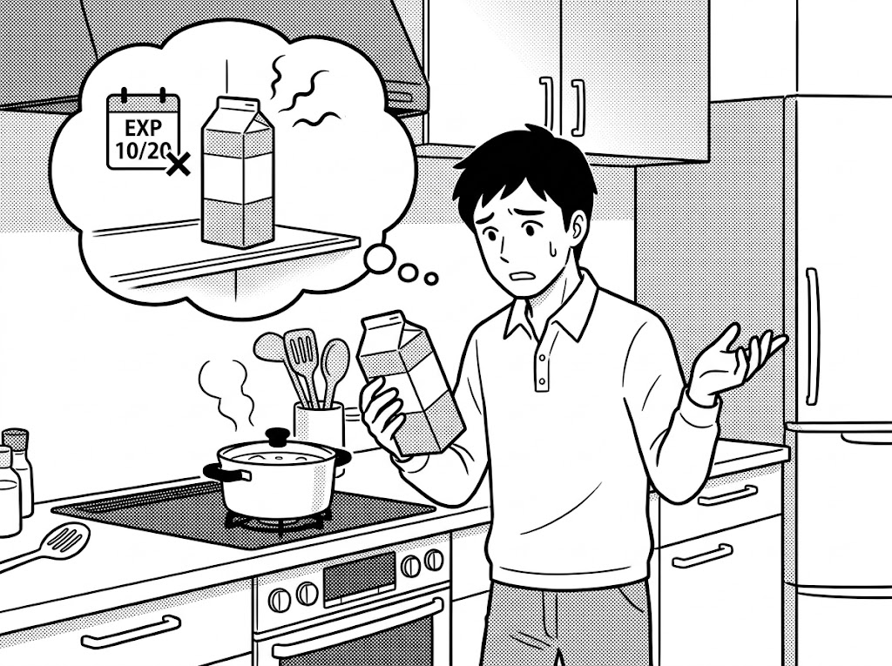

Pattern 1: He cannot make soup because the milk has expired.
Pattern 2: The milk is spoiled, so he cannot use it for cooking.
Q: According to the passage, how can supermarkets and restaurants help protect the environment and offer cheap food to local people?
These days, some smartphone apps allow people to buy unsold food at cheaper prices before stores close. Do you think using such apps is a good idea?
Your Opinion: [ Yes / No ]
Do you bring a reusable bag when you go shopping?
Your Opinion: [ Yes (I do) / No (I don't) ]
"According to the passage, how can supermarkets and restaurants help protect the environment and offer cheap food to local people?"
By selling unsold meals at lower prices through smartphone apps before closing time.
"Tell me as much as you can about what the people are doing."
A: A woman is buying bread at a discount.
B: A clerk is putting special stickers on sandwiches.
C: A man is scanning a QR code with his smartphone.
D: A girl is putting a reusable bag into her backpack.
E: A boy is looking at food items through the glass showcase.
"Now, look at the man in Picture B. Please describe the situation."
• He cannot make soup because the milk has expired.
• The milk is spoiled, so he cannot use it for cooking.
"These days, some smartphone apps allow people to buy unsold food at cheaper prices before stores close. Do you think using such apps is a good idea?"
(Yes): People can buy delicious meals at cheaper prices and save money. / Helps shops reduce food waste before closing.
(No): People have to pick up meals late at night. / Popular items sell out quickly.
"Do you bring a reusable bag when you go shopping?"
(Yes): I want to reduce plastic garbage. / Plastic bags cost extra money, so bringing my own bag saves money.
(No): I often forget to bring a bag. / Plastic bags are cheap, so I just buy one at the store.